Ø
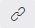
DatenüberprüfungMit Hilfe einer Datenüberprüfung kann der Inhalt einer Zelle während der Eingabe bzw. Auswahl kontrolliert werden. Neben der klassischen Erfassung stellt die Datenüberprüfung auch Erfassungshilfen in Form von Auswahllisten oder Checkboxen zur Verfügung.
Hinweis
Bei dem Verschieben von Zellen werden nur der Inhalt verschoben. Die Datenüberprüfung als solches bleibt auf der Ausgangszelle bestehen.
Eigenschaftsfenster "Datenüberprüfung"
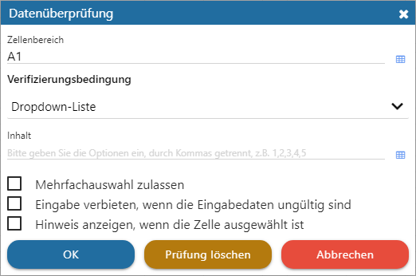
Folgende Einstellungen und Parameter können hinterlegt werden:
Bereich
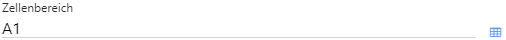
Ø Zellenbereich
An dieser Stelle muss die Zelle oder der Zellenbereich der Datenüberprüfung angegeben werden.
Verifizierungsbedingung
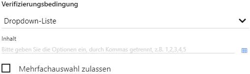
Ø Datentyp
Zunächst muss der Datentyp der Prüfung definiert werden. Hiervon abhängig stehen dann unterschiedliche Eingabefelder und Optionen zur Verfügung. Folgende Typen stehen zur Verfügung:
ü Dropdown-Liste
Als Eingabehilfe
wird eine Auswahlliste zur Verfügung gestellt. Die Auswahl selbst wird unter
"Inhalt" angegeben, wobei eine Trennung der Elemente durch ein "," (Komma)
vorgenommen wird (ohne Leerzeichen). Sollte eine Auswahl von mehreren Elementen
gewünscht sein, so kann dieses über die Option "Mehrfachauswahl zulassen"
realisiert werden.
Beispiel
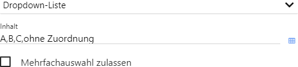
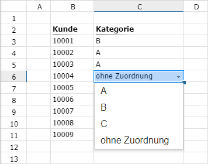
ü Dropdown-Liste
Als Eingabehilfe
wird eine Checkbox zur Verfügung gestellt. Ist diese aktiv, so wird der Text von
"Ausgewählt" angezeigt, ansonsten der Text von "Nicht ausgewählt".
Beispiel
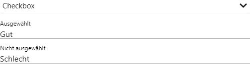
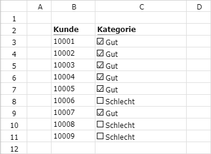
ü Nummer / Nummer - Ganzzahl
Mit
diesem Datentyp kann die Eingabe einer Zahl (mit Nachkommastellen) oder einer
Ganzzahl (ohne Nachkommastellen) geprüft werden. Wie die Prüfung erfolgen soll
(Größer als, Kleiner als, Ungleich, etc.) und wie die jeweiligen Zahlen zu
lauten haben, kann in den nachfolgenden Feldern hinterlegt werden.
Beispiel
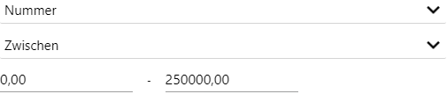
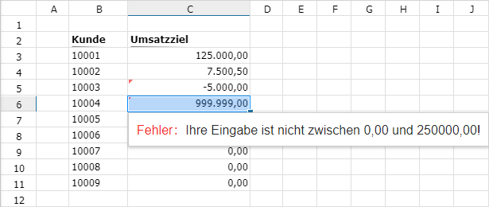
ü Textinhalt
Mit diesem Datentyp
kann die Eingabe eines Textes geprüft werden. Wie die Prüfung erfolgen soll
(Enthalten, Ausschließen, Gleich) und wie der Prüfungstext lauten soll, kann in
den nachfolgenden Feldern hinterlegt werden.
Beispiel
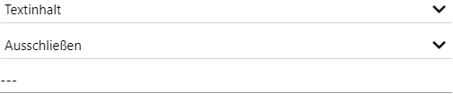
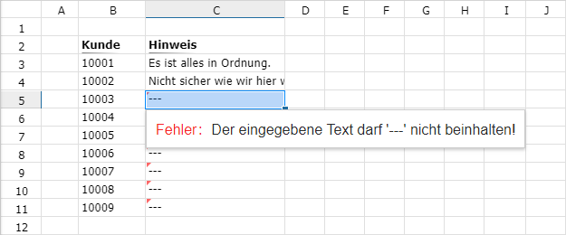
ü Textlänge
Mit diesem Datentyp
kann die Eingabe einer Textlänge geprüft werden. Wie die Prüfung erfolgen soll
(Größer als, Kleiner als, Ungleich, etc.) und wie die jeweiligen Zahlen zu
lauten haben, kann in den nachfolgenden Feldern hinterlegt werden.
Beispiel
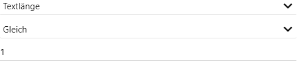
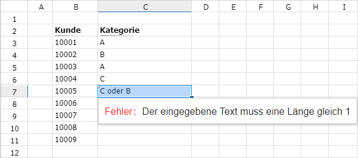
ü Datum
Mit diesem Datentyp kann
die Eingabe eines Datums geprüft werden. Wie die Prüfung erfolgen soll
(Zwischen, Gleich, Ungleich, etc.) und wie das Datum zu lauten hat (bzw. der
Bereich), kann in den nachfolgenden Feldern hinterlegt werden.
Beispiel
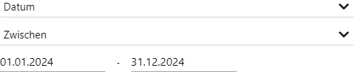
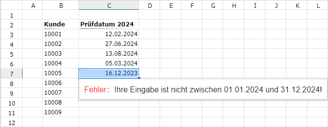
Prüfung und Hinweis
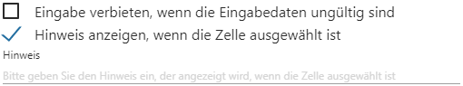
Ø Eingabe verbieten, wenn die Eingabedaten ungültig sind
Durch Aktivierung dieser Option ist eine Eingabe von ungültigen Daten nicht möglich und wird mit einer Fehlermeldung abgelehnt.
Ø Hinweis anzeigen, wenn die Zelle ausgewählt ist
Sollte bei Anwahl der Zelle ein Hinweistext gewünscht sein, so kann dieses mit Hilfe dieser Option realisiert werden. Nach Aktivierung kann in dem Eingabefeld "Hinweis" der Text hinterlegt werden.
Buttons
Ø Ok
Durch Anwahl des Buttons "Ok" werden die Eingaben gespeichert.
Ø Prüfung löschen
Mit Hilfe des Buttons "Prüfung löschen" kann die Datenüberprüfung entfernt werden.
Ø Abbrechen
Durch Anwahl des Buttons "Abbrechen" bzw. der Taste ESC wird das Fenster geschlossen und alle nicht gespeicherten Eingaben verworfen.